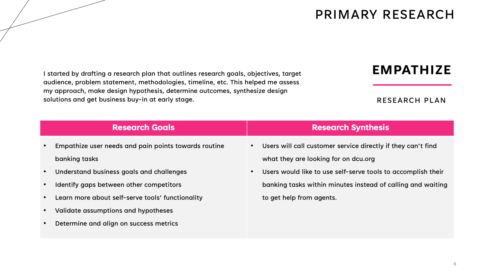
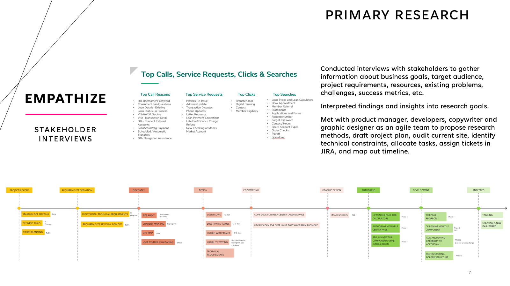
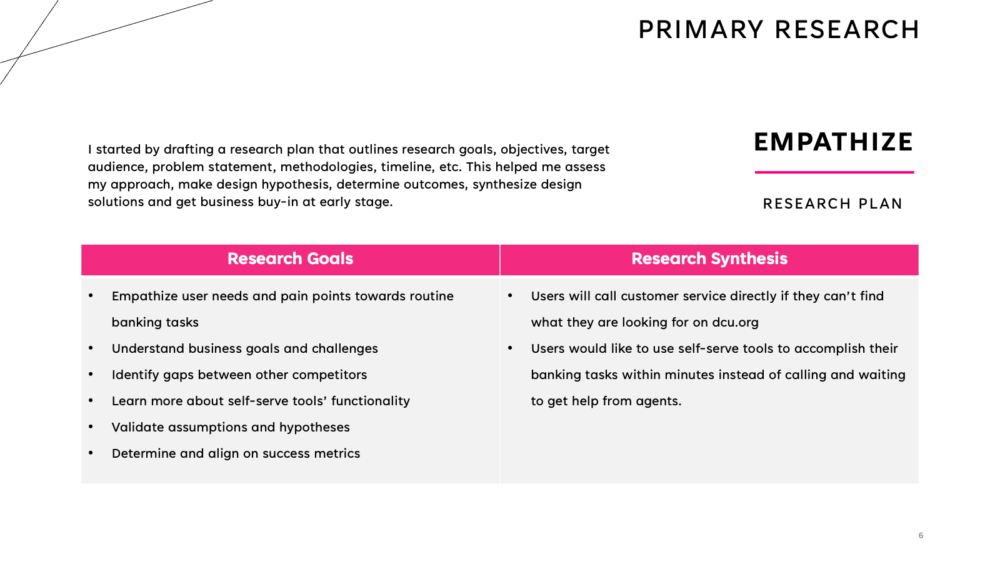
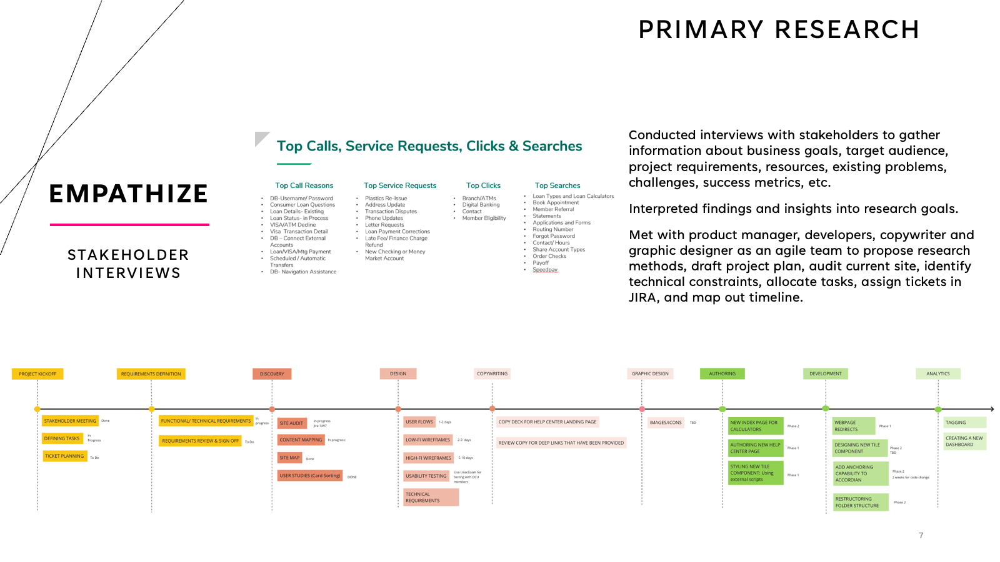

Kiki Xia
UX Designer | Researcher | Developer | Photographer
UX Designer | Researcher | Developer | Photographer


Greetings! I'm Kiki, a seasoned UX designer and researcher with nearly 7 years of experience. I have worked with Fortune 500 companies and startups across various industries, delivering intuitive and user-friendly digital experiences. As a problem solver and collaborative team player, I am passionate about user-centered design that meets both user needs and goals. My expertise in creating responsive and interactive websites and apps is informed by a deep understanding of user behavior and preferences. By leveraging this knowledge, I help clients improve user engagement and satisfaction, while achieving their business objectives.
I've got my master's degree in Informatics with concentration on Human-computer Interaction(HCI) at Northeastern University in Boston, where I maintained a perfect 4.0 GPA. As a UX professional, I possess a diverse skill set that includes user research, wireframing, prototyping, and usability test. I'm committed to staying up-to-date with the latest trends and techniques in the industry to provide top-notch solutions for clients. Currently, I'm pursuing a front-end web development graduate certificate at Harvard Extension School to gain a deeper understanding of designing user interfaces that are not only visually appealing but also functional and accessible. My curiosity and passion for learning new technologies drive me to explore innovative approaches to problem-solving.
When I'm not immersed in the digital world, you'll find me capturing the raw beauty of nature through my lens as an outdoor photographer. My love for nature fuels my creativity and inspires me to create user experiences that are both visually stunning and intuitive. As a digital product geek, I enjoy exploring the latest technologies and tinkering with new gadgets. I'm always on the lookout for innovative ways to integrate emerging trends into my work to stay ahead of the curve. I also enjoy exploring my creative side as an indoor person. I love to paint and find it to be a relaxing way to unwind after a long day. I'm also passionate about trying out new workout routines to maintain a healthy lifestyle. And when I'm in the mood for something sweet, I like to experiment with new beverage recipes. These allow me to recharge and bring a fresh perspective to my work as well.
Copyright © All rights reserved | Kiki Xia
 


